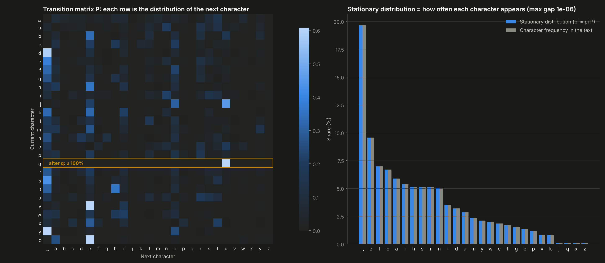
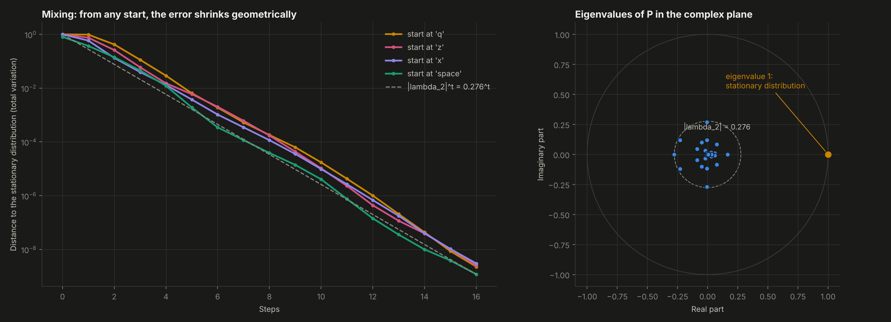
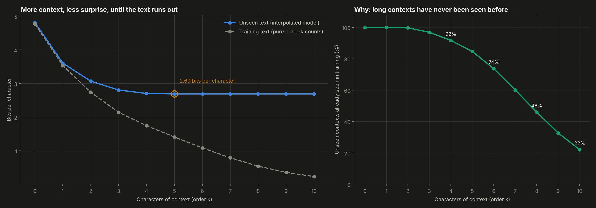
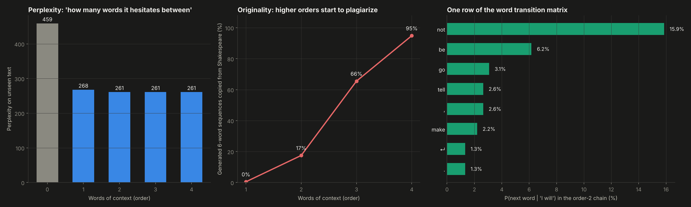

Text generated one token at a time from transition probabilities counted in 948,084 characters of Shakespeare. Transition matrices, stationary distributions, mixing and an interpolated language model, all written from scratch.
The chain is built in your browser from the training text. Low orders babble; high orders write convincing lines but start copying the original.
Drag to rotate. Each slice is the probability of every character k steps after a q; within a few steps it no longer depends on the q.
The 27-state letter chain and its long-run distribution.

How fast the chain forgets its starting point, explained by its second eigenvalue.

Bits needed per character as the chain looks further back.

The trade-off every n-gram model faces.
